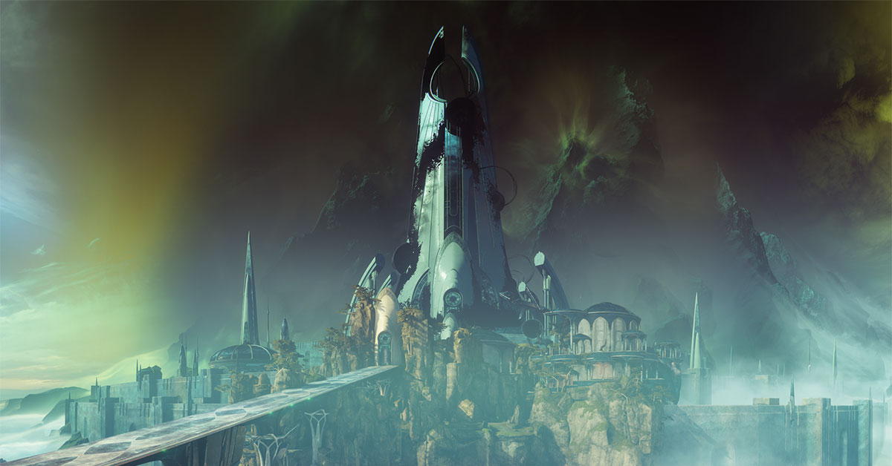
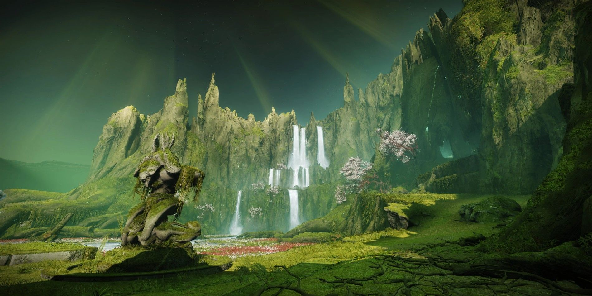
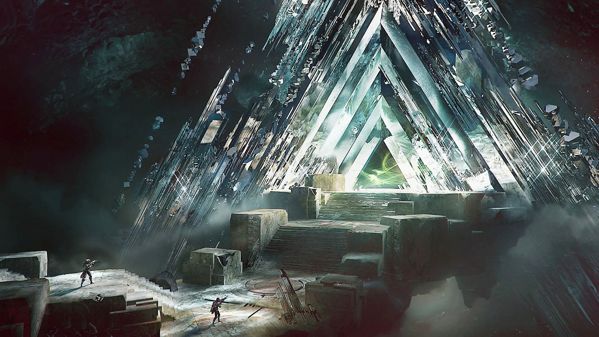
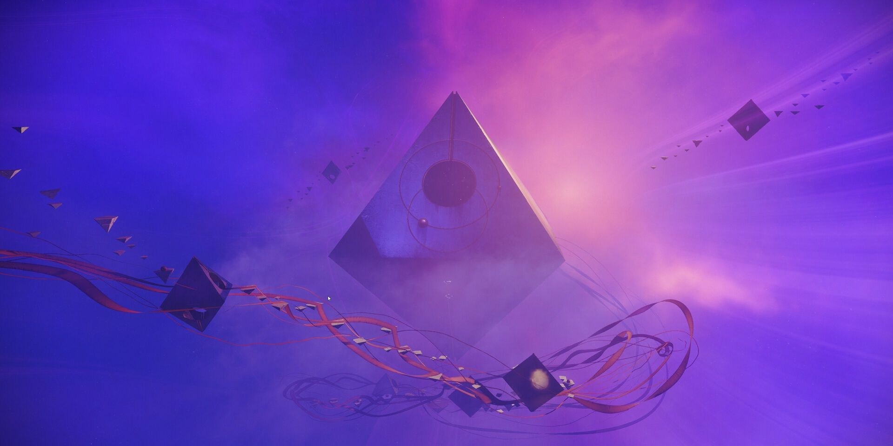

We can teach you how to do all of the encounters in the Last Wish Raid and help you get the armor set and weapons specific to this raid. If you are lucky, you might get your hands on the exotic fusion rifle "One Thousand Voices" which can only be obtained from the final chest in this raid.


We can teach you how to do all of the encounters in the Garden of Salvation Raid and help you get the armor set and weapons specific to this raid. Unlike all other raid exotics, Garden of Salvation has an exotic trace rifle known as "Divinity" that can only be obtained through a quest that is tied to many puzzles that must be completed within the raid. We can help you with the quest and puzzles associated with adding this weapon to your arsenal as we complete the raid.

We can teach you how to do all of the encounters in the Deep Stone Crypt Raid and help you get the armor set and weapons specific to this raid. If you are lucky, you might get your hands on the exotic rocket launcher "Eyes of Tomorrow" which can only be obtained from the final chest in this raid.

We can teach you how to do all of the encounters in the Vault of Glass Raid and help you get the armor set and weapons specific to this raid. If you are lucky, you might get your hands on the exotic fusion rifle "Vex Mythoclast" which can only be obtained from the final chest in this raid.

All of the encounters in the master version of the Vault of Glass Raid are the same as the normal version, with the exception that the enemies are much stronger. We can help you complete the weekly raid challenge in this mode and acquire a "Timelost" version of the weapons from the normal raid. This is notable because Timelost weapons are functionally the same as adept weapons and can also equip adept mods.

Nightfall strikes rotate weekly, and offer a grandmaster difficulty that presents various adept weapons upon completion. We can help you complete these very challenging and deadly strikes to obtain not only adept weapons, but also ascendant shards and enchancement prisms upon completion.

We can teach you how to navigate and complete all of the encounters in the Prophecy Dungeon to obtain two different armor sets, along with a variety of weapons and two secret chests.

We can teach you how to navigate and complete all of the encounters in the Pit of Heresy Dungeon to obtain the armor set and weapons specific to this dungeon.